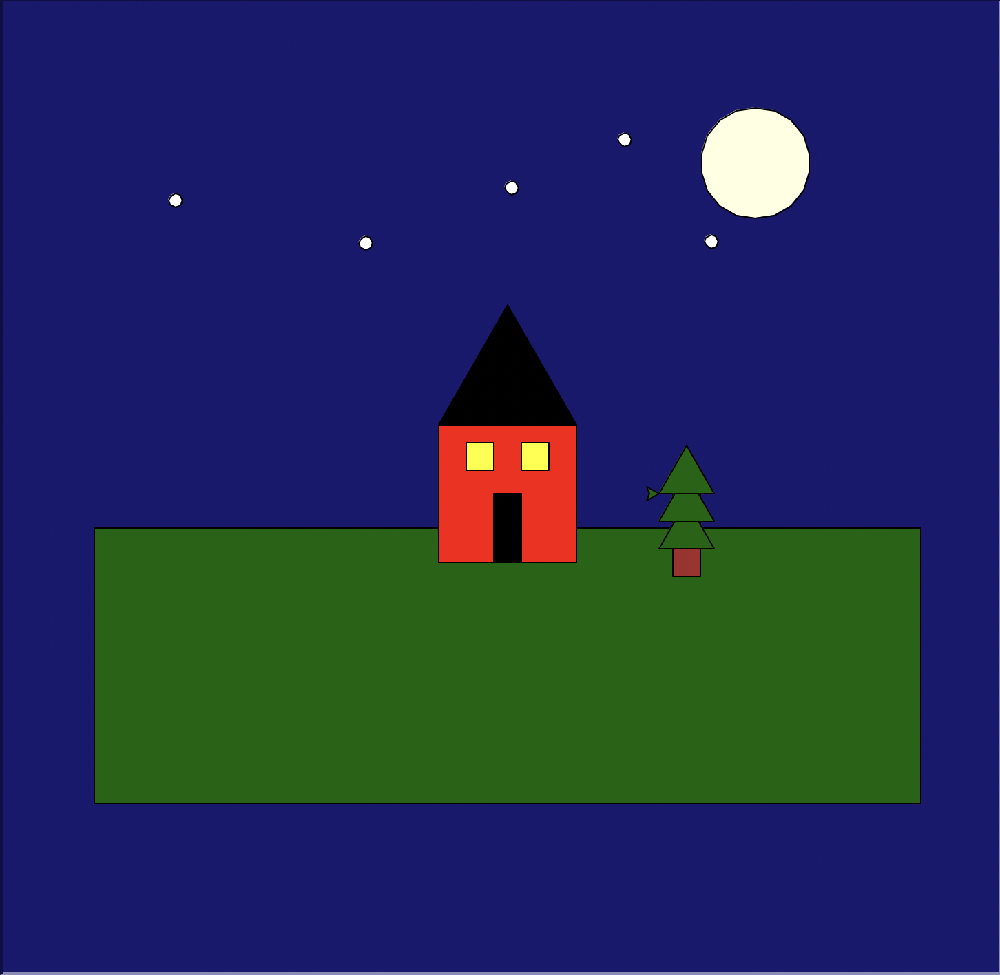

Project Overview
I made a house at night with stars and the moon in the sky and a tree next to the house using Python's built-in Turtle Graphics module.
Output Preview

Source Code
# Loads the Turtle graphics module, which is a built-in library in Python import turtle import math def setup_turtle(): """Initialize turtle with standard settings""" t = turtle.Turtle() t.speed(0) # Fastest speed screen = turtle.Screen() screen.title("Turtle Graphics Assignment") return t, screen def draw_rectangle(t, width, height, fill_color=None): """Draw a rectangle with optional fill""" if fill_color: t.fillcolor(fill_color) t.begin_fill() for _ in range(2): t.forward(width) t.right(90) t.forward(height) t.right(90) if fill_color: t.end_fill() def draw_square(t, size, fill_color=None): """Draw a square with optional fill""" if fill_color: t.fillcolor(fill_color) t.begin_fill() for _ in range(4): t.forward(size) t.right(90) if fill_color: t.end_fill() def draw_triangle(t, size, fill_color=None): """Draw an equilateral triangle with optional fill""" if fill_color: t.fillcolor(fill_color) t.begin_fill() for _ in range(3): t.forward(size) t.left(120) if fill_color: t.end_fill() def draw_circle(t, radius, fill_color=None): """Draw a circle with optional fill""" if fill_color: t.fillcolor(fill_color) t.begin_fill() t.circle(radius) if fill_color: t.end_fill() def jump_to(t, x, y): """Move turtle without drawing""" t.penup() t.goto(x, y) t.pendown() def draw_scene(t): """Draw a colorful scene with various shapes""" screen = t.getscreen() screen.bgcolor("midnightblue") # Draw ground jump_to(t, -300, -25) draw_rectangle(t, 600, 200, "darkgreen") # Draw moon jump_to(t, 180, 200) draw_circle(t, 40, "lightyellow") # Draw house jump_to(t, -50, 50) draw_rectangle(t, 100, 100, "red") # Draw roof jump_to(t, -50, 50) draw_triangle(t, 100, "black") # Draw windows jump_to(t, 10, 37) draw_square(t, 20, "yellow") jump_to(t, -30, 37) draw_square(t, 20, "yellow") # Draw door jump_to(t, -10, 0) draw_rectangle(t, 20, 50, "black") # Draw stars jump_to(t, -241, 208); draw_circle(t, 5, "white") jump_to(t, -103, 177); draw_circle(t, 5, "white") jump_to(t, 3, 217); draw_circle(t, 5, "white") # Draw tree trunk jump_to(t, 120, 0) draw_rectangle(t, 20, 60, "brown") # Draw tree foliage jump_to(t, 110, -40); draw_triangle(t, 40, "darkgreen") jump_to(t, 110, -20); draw_triangle(t, 40, "darkgreen") jump_to(t, 110, 0); draw_triangle(t, 40, "darkgreen") def main(): t, screen = setup_turtle() draw_scene(t) screen.mainloop() if __name__ == "__main__": main()